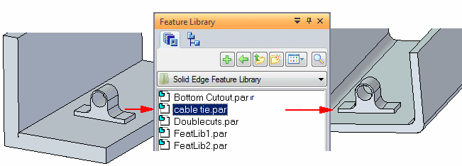

Feature libraries
You can use many of the features used for modeling in Solid Edge in a similar fashion in other designs. The Feature Library pane and Teamcenter Feature Library pane provide a place for you to store commonly used part and sheet metal features in an easy to access location so you create new designs with less effort and more consistency.
You cannot edit the features stored in the feature library.
For example, you can construct a cable tie in one part, store the feature in a feature library location, and then reuse it in a new part later.

A feature library entry may contain the following synchronous elements:
-
features
-
faces
-
sketches
-
planes
-
coordinate systems
-
constructions
You can only place a synchronous feature library member while in the synchronous environment.
The only ordered element that you can add to the feature library is a feature. When placing an ordered feature in a feature library, the attributes for the feature are maintained.
A feature library entry cannot contain a mixture of synchronous and ordered elements.
You can only place an ordered feature library member while in the ordered environment.
Feature library members
A feature library member is a special type of Solid Edge part or sheet metal document. Feature library members typically do not have a base feature.
Defining unmanaged feature library locations
An unmanaged feature library is a folder on your computer or a network drive that is used to store feature library members. You define the location for a feature library using the Look In option on the Feature Library pane. Use the Look In option to browse to an existing folder on your hard drive or a network drive. You also can use the Create New Folder button to create a new folder where you can store library members.
To avoid confusion, define standards for which folders you use as feature libraries. You should use these folders for feature library member documents only and not store other Solid Edge documents in them.
It is recommended that ordered and synchronous feature library members be added into separate folders.
Learn how to use feature libraries
The Feature Libraries activity is available for learning how to use feature libraries. You can access activities from the Activity collection in Solid Edge 2023 Help.
How do I
Create an unmanaged feature library memberPlace a feature library member into another document
Create a Teamcenter Feature Library member
Learn more
Storing features in a libraryPlacing feature library members
Redefining parent edges
Feature library guidelines
Look up more details
Feature Library tabTeamcenter Feature Library tab